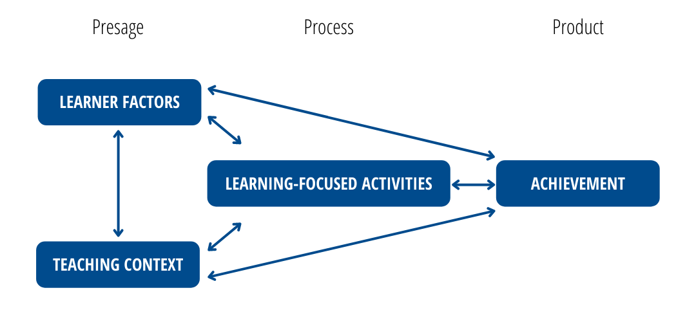

Review of the Literature
Structure of the Paper
This paper will begin with establishing a clear definition of assessment followed by an analysis of the literature related to the concept of assessment literacy (AL) (DeLuca, Coombs, et al. 2019) as it relates to the approaches to assessment (DeLuca, LaPointe-McEwan, and Luhanga 2016a) taken by HE instructors and the perceptions and experiences of HE learners. The last section will introduce a framework for understanding assessment in HE, situated within Biggs’ (1999; 1993) 3P model of teaching and learning, and research questions which emerge from the literature.
Defining Assessment
There are deep and rich bodies of literature addressing educational assessment writ large, both from a summative, psychometric perspective, and from a formative perspective. There is notably more research in the K-12 context, especially in relation to teacher preparation, compared to HE.
Among the more influential publications related to modern views of assessment (then usually called “evaluation”) was Scriven’s (1967) article in which he drew distinctions between “formative” and “summative” evaluation. Formative evaluation was described as evaluation for the purposes of improvement, and summative evaluation was seen as a validation of the quality of work at the end of a process. This distinction was quickly incorporated into Bloom’s (1968) ideas related to mastery learning and began to be promoted as a model for educational reform. However, by the late 1990s, when Black and Wiliam (1998) published their thorough review of the literature, the idea of formative assessment was still not well-defined or implemented. Black and Wiliam framed formative assessment as “encompassing all those activities undertaken by teachers, and/or by their students, which provide information to be used as feedback to modify the teaching and learning activities in which they are engaged” (1998, 7–8). Although Black and Wiliam came to very strongly-stated conclusions about the value of formative assessments (e.g. “The research reported here shows conclusively that formative assessment does improve learning. The gains in achievement appear to be quite considerable, and as noted earlier, amongst the largest ever reported for educational interventions.” (1998, 61)), reliance on summative assessments in HE has remained high Lipnevich et al. (2020).
The National Research Council’s (NRC) 2001 report Knowing what students know, advanced understanding of assessment with their definition of assessment as “a process of drawing reasonable inferences about what students know on the basis of evidence derived from observations of what they say, do, or make in selected situations” (Pellegrino, Chudowsky, and Glaser 2001, 112) or, more simply, “reasoning from evidence” (Pellegrino, Chudowsky, and Glaser 2001, 43), based on Mislevy’s assertion that “test theory is machinery for reasoning from students’ behavior to conjectures about their competence, as framed in a particular conception of competence.” (1994, 4). Such a parsimonious description, however, may hide some of the complexities of fairly and equitably coming to know what learners know and can do in relation to particular outcomes. Since knowledge of a particular domain cannot be directly observed in a learner, and therefore cannot be quantified, instructors must rely on data gathered during the teaching process to support a particular inference about what a learner probably knows. The data gathered from performance tasks such as exams, essays, portfolios, labs, etc, become evidence when they support an inference about what a learner knows and can do. Hence, all summative assessments are probablistic, not deterministic.
More recently, Earl (2013) further clarified the role assessment can play in learning by highlighting a distinction between assessment of learning (summative assessment) and assessment for learning (formative assessment by way of feedback) and also distinguishing both of those from assessment as learning (a subset of assessment for learning in which learners employ metacognitive skills to regulate their own learning tasks). Earl’s delineation between types of assessment reflects the modern view that assessment and learning are, or ought to be, tightly integrated. This relationship will be explored in more detail in relation to Biggs’ 3P Model of Teaching and Learning (1996, 1999).
The definitions of assessment above are typically understood as being classroom assessment, language which is more readily applied to face-to-face K-12 learning environments as opposed to HE environments mediated by technology. For the purposes of this paper, I will consider assessment of learning and summative assessment to be essentially synonymous, and I will differentiate between assessment for and as learning. I will use the term classroom assessment to differentiate from large-scale assessment, understood to be assessments deployed at levels above individual classrooms, such as school-, system-, or provincial/federal-levels, and I will use online assessment or technology-mediated assessment to refer specifically to classroom assessment in learning environments mediated by technology whether the learners are remote or not.
Conceptions of Assessment
Instructors in HE typically receive little formal preparation in either teaching practices or assessment during their graduate studies (Lipnevich et al. 2020; Massey, DeLuca, and LaPointe-McEwan 2020). Consequently, their own practice tends to follow from what they experienced as learners, which likely emphasized high-stakes summative tests which were either in alignment with outdated pedagogical practices or out of alignment with modern pedagogical practices. These prior conceptions of assessment carry significant weight in how HE instructors approach the assessment of learners in their own courses.
Instructors bring to an educational environment a host of influences related to their institutional context, their past experiences with assessment, their own course policies, and affective beliefs or conceptions about assessment and its purposes (J. B. Biggs 1993; G. T. L. Brown, Lake, and Matters 2011). These influences play a significant role in determining the approaches taken by both instructors with respect to assessment and learners with respect to how they approach learning tasks (G. T. L. Brown, Lake, and Matters 2011). DeLuca et al. (2013) argue that there are categories of conceptions exhibited by K-12 preservice teachers: assessment as testing, assessment as format, assessment purpose, and assessment as process. These conceptions are seen as increasingly complex, with those who see assessment as testing believing that assessment is primarily concerned with summative assessment of learning, usually using teacher-created selected-response tests. Those who see assessment as format tend to focus on whether the assessment is a “performance, product, or objectively-scored assessment” (p. 110). Assessment as purpose is delineated according to the summative/formative binary or Earl’s (2013) assessment of/for/as learning model. DeLuca et al. also identify other purposes of assessment such as accountability, gatekeeping, and teacher evaluation. Lastly, assessment as process, which is based on the National Research Council’s description of assessment being a process of reasoning from evidence (2001).
Fletcher et al. (2012) used Brown’s (2017) abridged Conceptions of Assessment (CoA) questionnaire to measure learners’ and instructors’ conceptions as follows: “assessment makes institutions accountable, assessment makes students accountable, assessment describes improvements in student abilities, assessment improves student learning, assessment improves teaching, assessment is valid, assessment is irrelevant and bad, assessment is irrelevant and ignored, and assessment is irrelevant and inaccurate” (p. 122). They report that instructors were more likely than learners to view assessment as consistent and trustworthy methods to understand and improve learning and that learners were more likely to have negative views of assessment and viewed it as a measure of student and institutional accountability.
Massey et al. (Massey, DeLuca, and LaPointe-McEwan 2020) used DeLuca et al.’s (2013) framework of conceptions in their study of HE instructors’ conceptions of assessment before and after an instructional development course focussed on assessment. They also considered the idea that there are two general orientations towards assessment in HE, an “assessment culture” and a “testing culture” Massey, DeLuca, and LaPointe-McEwan (2020). They report that they saw significant shifts in participants’ conceptions of assessment from more simplistic views of assessment as testing pre-treatment, to more complex and nuanced views or assessment as process post-treatment.
From the literature, it is clear that instructors’ conceptions of assessment are deeply influenced by many internal and external factors and, especially in HE, where there are few constraints on assessment practice (Lipnevich et al. 2020), there are many ways to describe or delineate different conceptions of assessment. Accordingly, there are multiple ways to conceptualize the skills and dispositions that comprise the idea of assessment literacy.
Assessment Literacy
The idea of AL is relatively recent in the K-12 literature and is nascent and under-theorized with respect to HE contexts (Medland 2015). AL has been defined variously as “the skills and knowledge teachers require to measure and support student learning through assessment” (DeLuca, LaPointe-McEwan, and Luhanga 2016a), “a basic understanding of educational assessment and related skills to apply such knowledge to various measures of student achievement” (Xu and Brown 2016), “an individual’s understandings of the fundamental assessment concepts and procedures deemed likely to influence educational decisions” (Popham 2011) and “a dynamic context-dependent social practice that involves teachers articulating and negotiating classroom and cultural knowledges with one another and with learners, in the initiation, development and practice of assessment to achieve the learning goals of students” (Willis, Adie, and Klenowski 2013). Key to these definitions are the ideas that AL is a complex, multi-faceted construct, that AL requires adequate (not high) levels of psychometric or statistical analyses, and that it is intended to enable learner success.
The recognition of AL as a critical competency for educators was influenced by the growing demands for teacher and school accountability in the post-WWII era in the USA and Canada, particularly the Elementary and Secondary Education Act (ESEA), passed in 1965, and the No Child Left Behind (NCLB) act, passed in 2002 (see DeLuca 2012 for a detailed discussion). As such, conceptualizations of AL have tended to be based on sets of standards to which K-12 teachers are obligated. The first set of standards was the Standards for Teacher Competence in Educational Assessment of Students (the Standards), published by a committee of representatives from the American Federation of Teachers, the National Council on Measurement in Education, and the National Education Association (AFT, NCME, and NEA 1990). The Standards are a list of seven skills expected of teachers:
- Teachers should be skilled in choosing assessment methods appropriate for instructional decisions.
- Teachers should be skilled in developing assessment methods appropriate for instructional decisions.
- The teacher should be skilled in administering, scoring, and interpreting the results of both externally-produced and teacher-produced assessment methods.
- Teachers should be skilled in using assessment results when making decisions about individual students, planning teaching, developing curriculum, and school improvement.
- Teachers should be skilled in developing valid pupil grading procedures which use pupil assessments.
- Teachers should be skilled in communicating assessment results to students, parents, other lay audiences, and other educators.
- Teachers should be skilled in recognizing unethical, illegal, and otherwise inappropriate assessment methods and uses of assessment information.
Shortly after the publication of the Standards, the term assessment literacy appeared in the literature with Stiggins’ (1991) article called Assessment Literacy. Stiggins initial article was an account of his observation that teacher education programs at the time spent very little time training teachers in the methods and dispositions of educational measurement. Stiggins followed this with another article (Stiggins 1995) where he outlined five characteristics of sound assessments, which:
- arise from and serve clear purposes;
- arise from and reflect clear and appropriate achievement targets;
- rely on a proper assessment method, given the purpose and the target;
- sample student achievement appropriately; and
- control for all relevant sources of bias and distortion. (1995, 240)
At around the same time, a group of Canadian educators published the Principles for Fair Student Assessment Practices for Education in Canada, Part A of which was a list of 37 guidelines related to five principles of fair student classroom assessment and was based on the 1990 Standards (see Appendix A). Part B was focused on externally-developed standardized tests.
While these three sets of recommendations varied widely in their granularity, all tended to reflect an emphasis on the 20th century conceptions of curriculum which prioritized linear and sequential teaching of knowledge followed sometime later by selected-response tests of knowledge. This required teachers to be literate in the psychometric skills required to administer and interpret these tests (DeLuca, LaPointe-McEwan, and Luhanga 2016b; Shepard 2000; Xu and Brown 2016) or assessment of learning. One notable distinction between the sets of standards is that the Canadian committee specifically noted their principles could be applied to K-12 as well as higher education, although the latter context would require changes in how assessment data are reported.
Twenty years following the publication of the Standards, Brookhart (2011) argued that the Standards had become outdated because they did not address either the growing practices and ideas of formative assessment (assessment for and as learning) or standards-based assessment and that they needed to be revised. Brookhart suggested a list of 11 skills (see Appendix A) to adjust the focus of the 1990 Standards to be in greater alignment with more modern conceptions of assessment.
Finally, in 2015, the Joint Committee on Standards for Educational Evaluation (JCSEE), with key representatives from both Canada and the USA, published the most recent set of standards, called the Classroom Assessment Standards for PreK-12 Teachers (see Appendix A). The JCSEE standards are grouped into three broad domains (foundations, use, and quality), each with five or six related standards. Despite the similarities to the Principles for Fair Student Assessment Practices for Education in Canada, including at least one common committee member, the JCSEE Standards are specifically not intended for use in HE.
As traditional conceptions of assessment and the standards expected of teachers, grounded in behaviourism and the need for objectivity tended to focus on assessment as a set of skill-based competencies to be employed by instructors, so AL could be defined as a set of sequential tasks in which instructors should engage to ensure objectivity and fairness (e.g. (Natriello 1987)). Recently, as curriculum and pedagogy have changed, several researchers have proposed models related to AL grounded in socio-constructivist views of learning (DeLuca 2012; Pastore and Andrade 2019; Xu and Brown 2016). DeLuca’s (2012) model, developed in the context of the No Child Left Behind accountability mandate in K-12 schools in the USA, is a coherent lens through which to understand how a pre-service teacher could develop assessment expertise throughout their teacher education program. DeLuca frames AL within Fostaty Young and Wilson’s (fostatyyoungAssessmentLearningICE2000?) ICE model which presents an integrated progression of learning through three levels of complexity, ideas, connections, and extensions. Underlying the three levels is a foundational level, where teacher candidates come to know and understand assessment as being situated within a model of teaching and learning, experiential and inclusive pedagogies, and an orientation towards continual professional learning. At the ideas level, teacher candidates gain expertise in the big ideas related to assessment (theories of learning, planning educational experiences, classroom assessment, and issues of diversity and inclusion). At the connections level, teacher candidates begin to construct their own cognitive conceptions of assessment as they integrate their own past experiences with their new knowledge and add their experience in practica. At the extensions level, teacher candidates begin to hone their practice as they deepen their understanding of assessment.
Willis et al. (2013) describe assessment literacy in alignment with Bernstien’s (1999) idea that there are “horizontal” and “vertical” discourses (p. 159) with respect to assessment. A horizontal discourse is the local, contextualized discourse around assessment which influences local practice, while a vertical discourse is the formalized, structured discourse on assessment in the literature and other more authoritative venues. They argue that any given instructor’s conceptions and practice of assessment will be informed by and negotiated within multiple horizontal and vertical discourses. Similarly, Xu and Brown’s (2016) model, teacher AL in practise (TALiP) presents a pathway for pre-service teachers to gain expertise in assessment. Based on a synthesis of 100 peer-reviewed publications between 1985 and 2015, they present a six-component model:
- the knowledge base
- teacher conceptions of assessment,
- institutional and socio-cultural contexts,
- teacher assessment literacy in practice,
- teacher learning, and
- teacher identity as assessor. Finally, Pastore and Andrade (2019) developed their model through a Delphi inquiry of 35 international experts in educational assessment and teacher education. They propose a model with three dimensions, conceptual, praxeological, and socio-emotional.
The authors of each of these three models recognize that AL is conceptualized as a multi-dimensional construct encompassing psychometric skills, affective beliefs and values, external and regulatory environments, and socially negotiated practices. However, these models are largely specific to the K-12 environment in general, and more specifically related to the preparation of K-12 teachers. Given that there are very few parallels between the preparation of K-12 teachers for their role and the preparation of HE instructors for theirs, it seems that a framework for understanding AL among HE instructors should consider their general lack of formal preparation for teaching or assessing learning (Lipnevich et al. 2020; Massey, DeLuca, and LaPointe-McEwan 2020).
Bearman et al. (2016) proposed a model for assessment decision-making in Australian HE, the Assessment Design Decisions Framwork (ADDF) in which the authors acknowledge the difficulty in translating idealized beliefs about assessment into actual practice as well as the lack of literature regarding how HE instructors go about designing assessments. While not specifically an AL framework, there are overlaps in terms of the dimensions they identified. They argue, like those previously mentioned, that assessment is a complex and messy process. Unique to their model is the idea that there is often a disconnect between what instructors know or believe to be true about assessment, and how instructors’ practice is impacted (or not) by their beliefs. Additionally, they argue, in alignment with Price et al. (2011), that AL ought to be considered from both instructor and learner perspectives. Their framework is comprised of six dimensions:
- purposes of assessments
- contexts of assessments
- learner outcomes
- tasks
- feedback processes
- interactions
Herppich et al. (2018) frame a model of assessment competence beginning with the idea that the purpose of educational assessment is to inform both formative (ongoing learning) and summative (credentialling or certification) decisions locating the educational decision subsequent and subordinate to the judgement. They use an example where a teacher observes a learner struggling with a test and might come to an appropriate judgement of a learner’s knowledge, but make an inappropriate instructional decision based on that information. This distinction is useful when, like Herppich and colleagues, the construct under investigation is assessment competence, which is observed after instructional activities. However, in the present paper, conceptions of assessment and AL are the relevant constructs and they are embedded in a model of teaching and learning where conceptions of assessment precede instructional activities.
DeLuca et al.’s model (2016a), approaches to classroom assessment defines and conceptualizes the assessment component of Biggs’ 3P model (1999; 1993) and so aligns well with a concise model of teaching and learning in higher education. The Approaches to Classroom Assessment model is based on the JCSEE standards (Klinger et al. 2015) and describes four themes of AL, each with three dimensions. The model represents somewhat of a break from previous models in that it references approaches to assessment rather than assessment literacies. This is a reflection of the authors’ view that language around literacies and competencies may indicate a reliance on “correct” views or methods rather than the complex array of influences that lead to multiple legitimate approaches as identified in the literature (DeLuca, Coombs, et al. 2019; Willis, Adie, and Klenowski 2013).
The themes DeLuca et al (2021, 10) describe along with their associated dimensions are listed below and illustrated in figure 2:
- Assessment purposes.
- Assessment of learning
- Teachers’ use of evidence to summate student learning and assign a grade in relation to students’ achievement of learning objectives
- Teachers’ use of evidence to summate student learning and assign a grade in relation to students’ achievement of learning objectives
- Assessment for learning
- Teachers’ and students’ use of evidence to provide feedback on progress towards learning objectives (i.e., inform next steps for learning and instructions).
- Involves both teacher-directed and student-centred approaches to formative assessment.
- Teachers’ and students’ use of evidence to provide feedback on progress towards learning objectives (i.e., inform next steps for learning and instructions).
- Assessment as learning
- Focuses on how the student is learning by providing feedback or experiences that foster students’ metacognitive abilities and learning skills (e.g., self-assessment, goal-setting, learning plans).
- Involves teachers but is primarily student-centred.
- Focuses on how the student is learning by providing feedback or experiences that foster students’ metacognitive abilities and learning skills (e.g., self-assessment, goal-setting, learning plans).
- Assessment process
- Design
- Focuses on the development of reliable assessments and items that measure student learning in relation to learning objectives.
- Focuses on the development of reliable assessments and items that measure student learning in relation to learning objectives.
- Use/scoring
- Focuses of the adjustment and use of scoring protocols and grading schemes to respond to assessment scenarios.
- Focuses of the adjustment and use of scoring protocols and grading schemes to respond to assessment scenarios.
- Communication
- focuses on the interpretation of assessment results and feedback through communication to students and parents.
- focuses on the interpretation of assessment results and feedback through communication to students and parents.
- Assessment fairness
- Standard
- Maintains the equal assessment protocols for all students.
- Maintains the equal assessment protocols for all students.
- Equitable
- Differentiates assessment protocols for formally identified students (i.e., special education or English language learners)
- Differentiates assessment protocols for formally identified students (i.e., special education or English language learners)
- Differentiated
- Individualizes learning opportunities and assessments that address each student’s unique learning needs and goals.
- Individualizes learning opportunities and assessments that address each student’s unique learning needs and goals.
- Assessment theory
- Consistent
- Works to ensure consistency in results within assessments, across time periods, and between teachers.
- Works to ensure consistency in results within assessments, across time periods, and between teachers.
- Contextual
- Works to ensure assessment or evaluation measures what it claims to measure (i.e., learning objectives) and promote valid interpretations of results.
- Works to ensure assessment or evaluation measures what it claims to measure (i.e., learning objectives) and promote valid interpretations of results.
- Balanced
- Works to ensure consistency in measuring what an assessment or evaluation intends to measure, and degree to which an assessment or evaluation measures what it claims to measure.
Figure 2. Approaches to Classroom Assessment. (DeLuca, Rickey, and Coombs 2021, 10)
Assessment and Technology
Educational technologies are often viewed and reported on with a distinct positivity bias (Irvine 2020) wherein ‘new’ technologies are presumed to represent progress and will inevitably have a positive effect on learning. This can be seen in the titles given to some initiatives, such as “Technology-Enhanced Assessment” (Oldfield et al. 2012; Timmis et al. 2016), “IT-enabled assessment” (Webb and Ifenthaler 2018), or “technology-rich” (Lin et al. 2020). As such, I will use the more neutral term “technology-mediated” to indicate that adding digital technology to an assessment environment does not necessarily improve that environment. Similar to assessment practices being grounded in (both philosophically, as in ‘based upon,’ and figuratively, as in ‘stuck in’) behaviourist conceptions of pedagogy leading to practices that rely heavily on summative approaches to assessment, so too, many educational technologies are grounded in (based upon and stuck in) behaviourist conceptions of pedagogy leading to practices that rely heavily on summative approaches to assessment. This can be seen in the progressively more advanced technologies beginning with Pressey’s teaching machines (Benjamin 1988; Pressey 1927; A. Watters 2021) which was built to automate the process of “drilling” learners in an effort to teach them some concept. The machine needed to be pre-programmed with a series of selected-response questions along with distractors and correct answers. As a learner answered each question, the machine was programmed to match the response to the programmed correct response, and if it matched, the learner was determined to have “mastered” that question and it was dropped from the bank of questions the learner had not yet mastered. If it did not match, the question was cycled back into the bank to be repeated. Clearly, this technology was promoted as a tool to be used to modernize and increase the efficiency of tasks that aligned with the dominant pedagigical paradigm at the time. A second example, although not one marketed directly to schools, but to parents, was the Speak & Spell, released in 1978 by Texas Instruments (Braguinski 2018; Frantz 2014), which represented an advance in technology and an increase in efficiency, as the Speak & Spell could be programmed to store and reproduce voice recordings of words as well as multiple recordings of feedback messages (Frantz 2014). While the Speak & Spell was a leap forward in processing power, memory storage, and therefore complexity, the underlying pedagogy remained identical to that of Pressey’s teaching machine (Audrey Watters 2015). Moving forward again, and modern technologies are vastly more powerful than teaching machines or the Speak & Spell and power very complex adaptive tests, such as the NCLEX-RN, the national licensing exam for Registered Nurses in Canada and the USA (Smith Glasgow, Dreher, and Schreiber 2019). These advances in both hardware and software allow for still greater efficiencies in testing, yet the NCLEX-RN must still be programmed with selected-response questions, their distractors, and correct responses, all still in alignment with behavioural models of pedagogy. The NCLEX-RN is an example of a large-scale, standardized assessment (LSA), so is not parallel to the classroom assessment practices which are the subject of this paper, but I mention it here to draw the distinction between professionally-created LSAs and most instructor-created classroom assessments. The NCLEX-RN is continually revised and updated and reflects very robust psychometric properties (validity and reliability) (Smith Glasgow, Dreher, and Schreiber 2019). More importantly, however, the NCLEX-RN has been updated to “shift away from a primary focus on content and the indirect testing of clinical judgment to a major focus on clinical judgment” (Caputi 2019, 2). Caputi, in her reflections on the next-generation NCLEX-RN (NGN) asks 2 questions (the second of which is most relevant here): “1) Are students ready for this type of NCLEX? 2) If our students already pass the NCLEX, can we keep doing the same type of preparation for the NGN?” (p. 2). Her answer to both questions is “No.” She goes on to argue,
So, what can faculty do? I propose that nurse faculty, at all levels of nursing education, revise their curricula to teach a detailed thinking process that students must employ over and over throughout the nursing curriculum. Just as students practice psychomotor skills until they are perfected, they must do so with thinking skills and strategies A new model for teaching clinical judgment is needed”, (p. 2, emphasis in original).
In this case, the technology-mediated assessment instrument has been designed to measure 21st century skills, and Caputi recognizes that if pre-service nurses are going to have to pass the NGN, nursing instructors will need to realign their pedagogy. This example illustrates how LSAs exert pressure on instructors and schools to adjust their pedagogy, in the case of nursing, to encourage 21st century pedagogy that teaches thinking skills. The opposite is also true, however, in that LSAs which emphasize the lower-level cognitive skills prized by the behaviourists cause instructors to match their pedagogy to that model (Caputi 2019; Clarke-Midura and Dede 2010; DeLuca, Rickey, and Coombs 2021; Pellegrino and Quellmalz 2010). Further, the American Educational Research Association (AERA), the National Council on Measurement in Education (NCME), and the American Psychological Association (APA) argue that LSAs tend to have other negative effects on education systems, namely the narrowing of curricula (teaching to the test), reduced instructional strategies (previously mentioned), higher dropout rates, and the enactment of policies and practices that increase test scores without increasing learning (2014). The NCLEX-RN notwithstanding, many implementations of technology in assessment remain focused on increasing the efficiencies of summative test administration (Broadfoot 2016; Pellegrino and Quellmalz 2010; Webb and Ifenthaler 2018).
Impact on Learners
Aside from the effects on learners’ approaches to their learning, assessment, particularly summative assessment, has profound effects in other ways, such as determining status or progression in a course or program, determining eligibility for scholarships and awards, determining career paths and on other affective constructs such as motivation (Crooks 1988) and anxiety (Menucha Birenbaum 2007; Harlen and Deakin Crick 2002). Jones et al. (2021) report that assessment practices impact learners’ well-being, which they define as including physical and mental health as well as the ability for learners to “fully exercise their cognitive, emotional, physical and social powers, leading to flourishing” (p. 439). They note that summative assessment practices are associated in the literature with “anxiety, depression, disordered eating, self-harm, panic attacks, burnout, … thoughts of suicide … disordered sleep, loss of appetite, physical inactivity, poor physical health, … substance misuse … poorer productivity, motivation and test scores” and that changing from norm-referenced scoring (where learners are ranked relative to each other) to criterion-referenced or pass-fail scoring is associated with lower levels of stress and anxiety among medical students in the USA.
Theoretical Framework Overview
Given the wide variety of models, mostly in K-12 contexts but increasingly in HE, and the degree to which there appears to be overlap between those models, I take the position that introducing a new model into an already crowded landscape would serve little purpose. Furthermore, models do exist which have been validated empirically (DeLuca, LaPointe-McEwan, and Luhanga 2016a) and the authors of which have indicated that, despite the model being developed for K-12 contexts, adjusting the model to fit the HE context would be a worthwhile contribution to the literature (personal communication).
Here, I present an argument that DeLuca et al.’s idea of approaches to classroom assessment (2016a) aligns well with the landscape of teaching, learning, and assessment in HE and may provide a blueprint for assessment reform in HE. In order to situate Approaches to Classroom Assessment within the context of teaching and learning in HE, I begin with Biggs’ (J. Biggs 1999; J. B. Biggs 1993) 3P model of teaching and learning (see Figure 3) which presents three stages of the teaching and learning process. In the first stage, presage, Biggs models both learners and the teaching context. The learners’ contexts include their previous learning, cognitive abilities, and their beliefs about the learning context, and all of these influence their preferred approaches to learning. The teaching context includes the instructors beliefs and conceptions of the curriculum and assessment, and also institutional and sometimes regulatory requirements, and each of these influence the instructor’s approach to teaching, and more to the point for this paper, their approach to assessment. The process stage represents the activities in which learners engage in order to meet the learning outcomes. Biggs notes that learners tend to either take surface approaches, where they use low-level cognitive skills (memorization of facts) in activities that require high-level cognitive skills (analysis or critique), or they take deep approaches, where they use high-level cognitive skills for activities which require them. Learner activity in this stage is influenced by their own backgrounds, abilities, and affective views of the purpose of the task and it is influenced by the choices the instructor makes based on their presage influences. In this way, Earl’s (2013) delineation between assessment of, for, and as learning can be seen to influence student learning approaches. For example, researchers note that when instructors’ approach prioritizes assessment of learning, learners tend to take a surface approach to their learning (Menucha Birenbaum 2007). Finally, the product stage represents the learners’ achievement in relation to the outcomes. Moving left to right, each of the first two stages represents an input into the system, and the third, an output. However, as the arrows between the components are two-way, the product stage also becomes an input, the results of which are fed back into the system (right to left) informing learners of their status in relation to the outcomes as well as the utility of their learning activities. It also informs the instructor about the nature of the learners’ achievement and the utility of the learning tasks. The achievement component provides formative feedback directly to both instructors and learners, informing both about next steps in the learning process. It also provides insight into the learning activities and, when that is fed back to learners, provides metacognitive cues as to the strategies learners might use in future tasks. It also provides information to instructors about the nature of the learning activities and how their approaches to assessment are impacting learning.
 Figure 3. 3P Model of Teaching and Learning. (J. Biggs 1999; J. B. Biggs 1993)